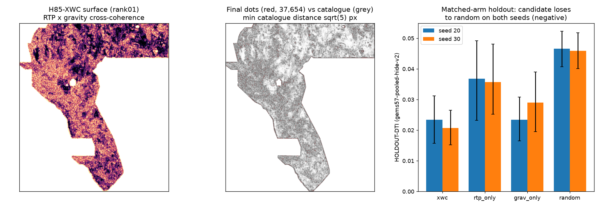

H85-XWC - magnetic x gravity cross-field coherence
⬇ H85-XWC unique submission GeoTIFF (new method, machine-validated)
✅ OK TO DOWNLOAD · ⛔ NOT OK TO SUBMIT — automated gate verdict: NEGATIVE (holdout candidate below matched random control; 0 weekly slots used; selector: not approved)
Download .tif (113 KB) One-TIFF .zip (76 KB) Executive summary: exactly how submission works →name: gems77-h85xwc-magxgrav-coherence-37654dots-20261021-zeros
note (102 chars): H85-XWC RTP x gravity multi-scale cross-coherence, label-blind; 37654 dotted sep3px >2px off catalogue
sha256: 9546011da3c1ba5175c30937a4d4a495e9bb81a335a12eb80c715b183969e23b · dots: 37654 · on catalogue: 0 ·
min catalogue distance: 2.236 px
Method (new in this repo — no prior implementation)
Magnetic×gravity multi-scale cross-field coherence: FFT log-Gabor bandpass (wavelengths
4/8/16 px = 400/800/1600 m) of high-passed RTP magnetics (band 2) and isostatic gravity (band 13);
per-scale local coherence |S(XY)|/√(S(X²)S(Y²)) × rank joint edge energy, weighted by cross-scale
phase-sign agreement. Label-blind (no catalogue input to the surface). Emission reuses the shared
template decimated dotted allocator at the H33-matched budget of 37,654 dots, >2 px from the
catalogue. Preregistration: registry/preregistration_h85xwc.json,
hypotheses: research/h85_hypotheses.md. Named mimic: lithologic/intrusive contacts
and flight-line seams.

Results — every number labelled
| Quantity | Value | Class |
|---|---|---|
| Candidate, seed 20 | 0.0234 (95% CI 0.0157–0.0312; 11321 withheld positives) | HOLDOUT-DTI, gems57-pooled-hide-v2 |
| Candidate, seed 30 | 0.0207 (95% CI 0.0152–0.0265; 11342 withheld) | HOLDOUT-DTI |
| Matched random control | 0.0465 (s20) / 0.0459 (s30) | HOLDOUT-DTI |
| Single-field controls (RTP / gravity) | 0.0368 / 0.0234 (s20) | HOLDOUT-DTI |
| Leakage canary (max single-feature AUC) | 0.530 (stop > 0.90: clear) | Diagnostic |
| H33 family best 0.2778 | Owner-reported; no organizer receipt in this repo | UNVERIFIED — not ORGANIZER-CONFIRMED |
Interpretation. Cross-field coherence concentrates emission on shared lithologic edges (the named mimic), which do not coincide with withheld catalogue faults; uniform random coverage earns more 300 m-kernel credit. This closes the cross-coherence lane as preregistered — no retuning. The file above is nevertheless a genuinely unique, format-valid GeoTIFF: it is safe to download and inspect, and the automated gate says do not spend a weekly slot on it.
Evidence: run card ·
evidence/h85xwc_exp1_canary.json · evidence/h85xwc_exp2_holdout.json ·
evidence/h85xwc_exp3_build.json · reproduce: scripts/h85xwc_pipeline.py,
audit: scripts/h85xwc_audit.py.